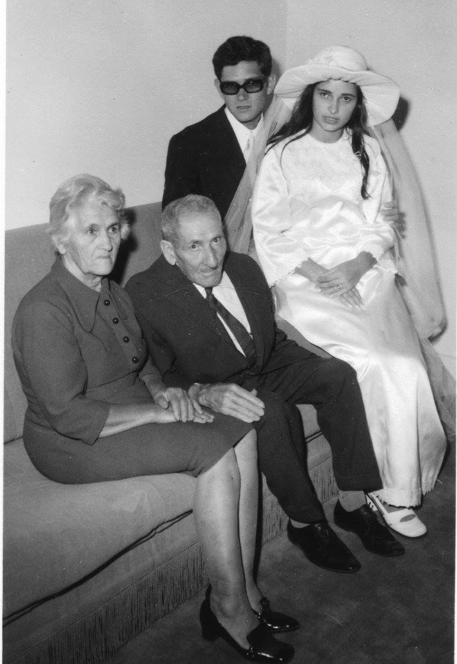
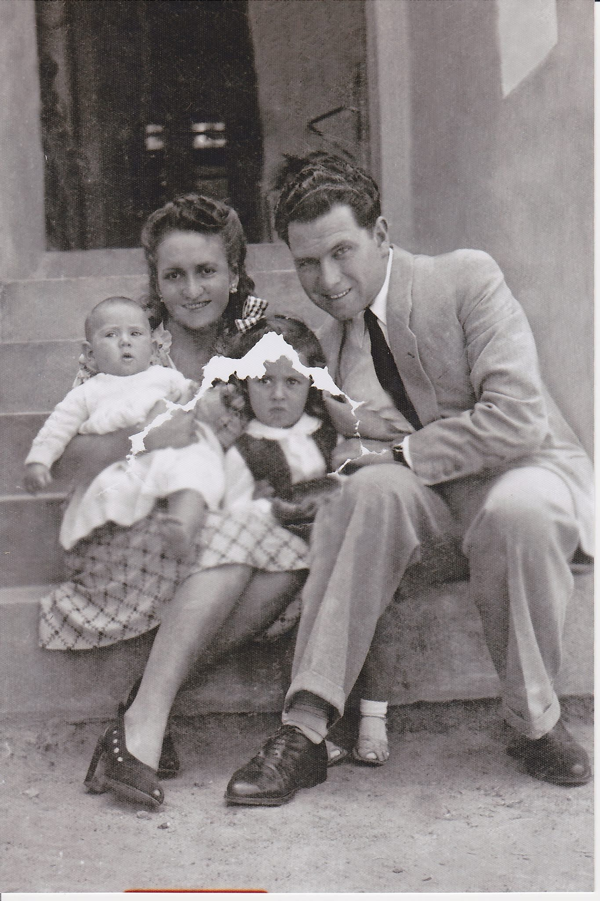

Pai de Augusta
António Baptista
(❤ N. 27/12/1865 / †) 💍 Casou a 02/09/1889

Mãe de Augusta
Maria de Jesus Teixeira
(❤ N. Meados/1868 / †)
-

MatriarcaAugusta Baptista Quental📍 Lubango, Angola CônjugeManuel QuentalFalecido
CônjugeManuel QuentalFalecido-
 FilhaMaria Adélia Quental MendonçaN. - Falecida
FilhaMaria Adélia Quental MendonçaN. - Falecida
📍 Lubango, Angola-
NetaManuela Costa📍 Localização
-
-

FilhaAlbertina Maria QuentalN. - Falecida
📍 Lubango, Angola-
NetaAnabela Quental Borges📍 Localização
-
 NetoJúlio Quental Borges📍 Localização
NetoJúlio Quental Borges📍 Localização
-
-